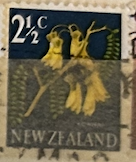
| SOURCE | TITLE| IMAGE MATCH | click to source page |
| eBay | NEW ZEALAND - 1967 2 1/2c KOWHAI, white flaw on 2 foot - CP#ODV4l - FU - NZ 124 | eBay | 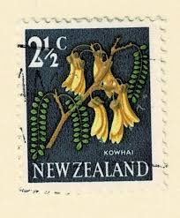 |
| eBay | Cancelled to Order/CTO Decimal New Zealand Stamps for sale | eBay | 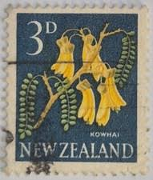 |
| HipStamp | New Zealand 1960 Tree Flowers "Kowhi" 3d used SG 785 | Australia & Oceania - New Zealand, General Issue Stamp / HipStamp | 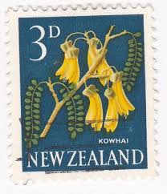 |
| eBay | Ships, Boats Used New Zealand Stamps for sale | eBay | 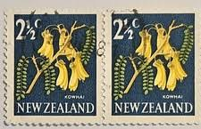 |
| HipStamp | New Zealand 385 Kowhai Flower 1967 | Australia & Oceania - New Zealand, General Issue Stamp / HipStamp | 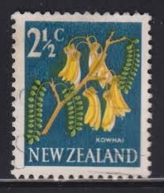 |
| eBay | Blue New Zealand Stamps for sale | eBay | 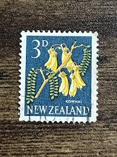 |
| eBay | Mint Never Hinged/MNH Blue New Zealand Stamps for sale | eBay | 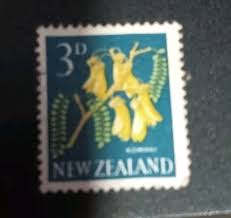 |
| Etsy | New Zealand 3d , Stamp E2 Acceptable Condition Nice Colour, Used.. - Etsy | 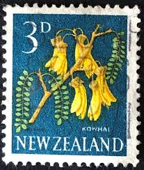 |
| HipStamp | New Zealand 1965 Kowhai Flower, 3d chalk paper, mint #337,SG785f | Australia & Oceania - New Zealand, General Issue Stamp / HipStamp | 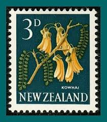 |
| Dreamstime.com | Vintage Flower Postage Stamps from Around the World. Editorial Stock Photo - Image of postage, design: 284564433 | 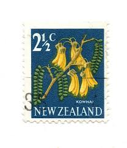 |
| Discover 670 A vintage childhood and vintage children ideas | vintage photos, vintage children photos, vintage and more | 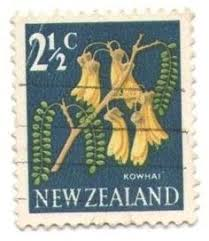 | |
| HipStamp | New Zealand 1967 Sc#870, SG#848 2-1/2c Kowhai USED. | Australia & Oceania - New Zealand, General Issue Stamp / HipStamp | 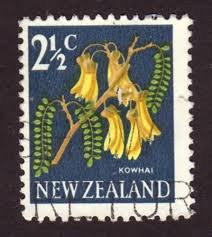 |
| eBay | Multi-Color Used Postage New Zealand Stamps for sale | eBay | 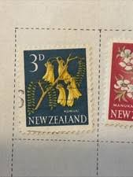 |
| Redbubble | Vintage New Zealand Flower Postage Stamp" Sticker for Sale by red-amber65 | Redbubble | 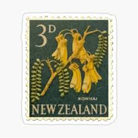 |
| ebid.net | New Zealand 1967 Flowers 2 1/2c Used Stamp on eBid United States | 190566158 | 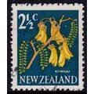 |
| eBay | Flowers Used Australian & Oceanian Stamps for sale | eBay | 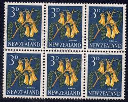 |
| Stamp Auction | Daniel F. Kelleher Auctions, LLC Sale - 651 Page 38 | 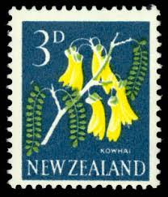 |
| Alamy | Kowhai, Sophora microphylla, flower, postage stamp, New Zealand, 1960 Stock Photo - Alamy | 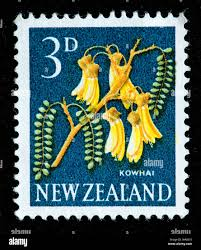 |
| eBay | New Zealand 3d Pictorial Stamp of a Flower (Kowhai) circa 1960s | eBay | 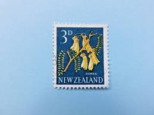 |
| Stamp Auction | Daniel F. Kelleher Auctions, LLC Sale - 655 Page 61 | 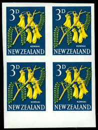 |
| eBay | Pictorial Error, Variety New Zealand Stamps for sale | eBay | 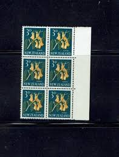 |
| Alamy | NEW ZEALAND - CIRCA 1960: stamp printed by New Zealand, shows Kaka Beak Flower, circa 1960 Stock Photo - Alamy | 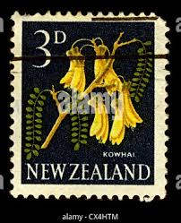 |
| zeboose.com | New Zealand 1960 (MNH) 3d Kowhai pair missing brown from one stamp – ZEBOOSE.COM | 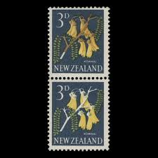 |
| eBay | Stamps New Zealand Rare | eBay | 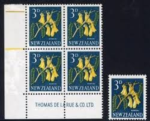 |
| HipStamp | Bridger & Kay Ltd. / HipStamp | 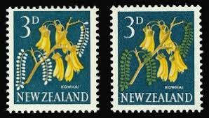 |
| eBay | Flowers New Zealand Stamps for sale | eBay | 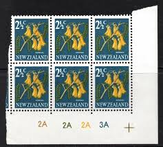 |
| New Zealand. KOWHAI FLOWER. Scott 337 A135, Issued 1960 Sept 1, 3d. /ldb. | 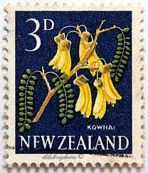 | |
| Shutterstock | 73 Mauro Fiore Royalty-Free Images, Stock Photos & Pictures | Shutterstock | 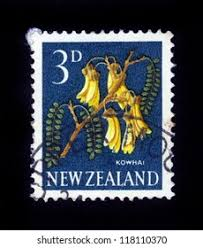 |
| Bob Shop | Looking for new+and+used+laptops Buy online on Bob Shop. | 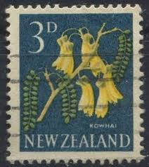 |
| eBay | New Zealand - 1967 -1968 Local Motifs - Sophora microphylla | eBay | 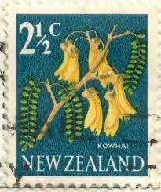 |
| gardenhistoryresearchfoundation.com | Gardens Scenes on New Zealand Stamps – The Garden History Research Foundation | 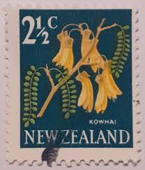 |
| eBay | Superb Independent Nation New Zealand Stamps for sale | Shop with Afterpay | eBay Australia | 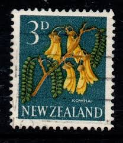 |
| Alamy | NEW ZEALAND - CIRCA 1960: stamp printed by New Zealand, shows Hibiscus, circa 1960 Stock Photo - Alamy | 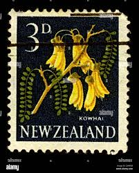 |
| NEW ZEALAND STAMPS Archives | Rare old Stamps | 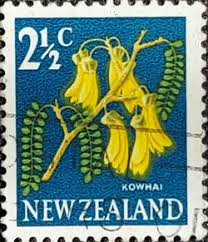 | |
| Shutterstock | New Zealand Circa 1960 Cancelled Postage Stock Photo 2719156613 | Shutterstock | 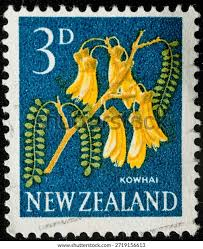 |
| eBay | STAMP NEW ZEALAND SG785 1960 3d Flowers Kowhai Used | eBay | 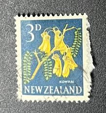 |
| Bangladesh 🇧🇩 stamps | 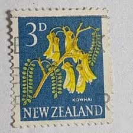 | |
| sergent.com.au | New Zealand Stamp Errors 1967 Pictorials | 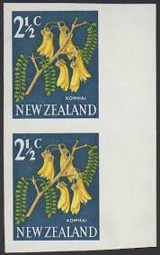 |
| Shutterstock | 814+ Thousand Annulés Royalty-Free Images, Stock Photos & Pictures | Shutterstock | 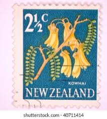 |
| Alamy | New zealand post office hi-res stock photography and images - Alamy | 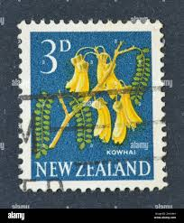 |
| HipStamp | New Zealand 385: 2.5c Kowhai flower, used, F-VF | Australia & Oceania - New Zealand, General Issue Stamp / HipStamp | 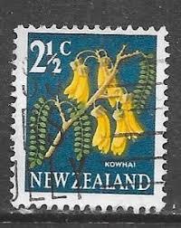 |
| Blogger.com | 1960 - 1966 Pictorials Part One. | 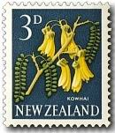 |
| Blogger.com | 1960 - 1966 Pictorials Part Three | 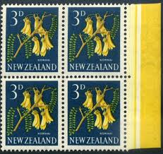 |
| eBay | New Zealand Postmark - Oxford (Christchurch) J class | eBay | 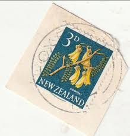 |
| allnumis.com | 3 Pence 1960 - Kowhai (Sophora microphylla), Flowers - New Zealand - Stamp - 53704 | 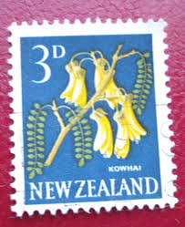 |
| empirestamps.co.uk | Browse Listings - Page 39 of 56 - 10 items per page - Highest Price First | Empire Stamps | 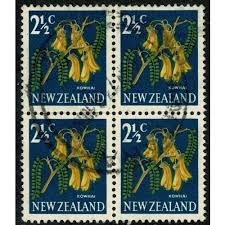 |
| Shutterstock | Karnal Haryana India -august 12th 2025-closeup Stock Photo 2676291305 | Shutterstock | 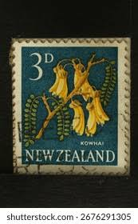 |
| Stamp Community Forum | New Zealand Errors Not Listed In Scott - Stamp Community Forum | 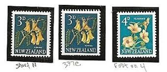 |
| Dauwalders | New Zealand 1960 SGMS804b F/U 2 sheets | 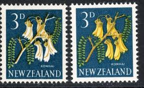 |
| The Kowhai plant of New Zealand .-nice yellow flowers. | ||
| Shutterstock | 98,335 New Zealand South Island Postcard Images Royalty-Free Images, Stock Photos & Pictures | Shutterstock | |
| Dreamstime.com | Design Wall Bedroom or Reception Room Decorated with a Wallpaper Texture Background. Abstract Carpet Paper Tone Soft Color Beige, Stock Photo - Image of decorated, bedroom: 169461312 | |
| Stampbundle, US & Worldwide stamps, Stamp Collecting, Buy Sell Swap | ||
| eBay | Pictorial New Zealand Stamp Blocks for sale | eBay | |
| eBay | NEW ZEALAND 1960 3d Kowhai plate block 2113 MNH............................y487 | eBay | |
| zeboose.com | New Zealand 1967 (MNH) 2½c Kowhai imprint block with malformed '2' flaw – ZEBOOSE.COM | |
| lighthousenz.com | 3d Kowhai - Chambon Perforation - New Zealand 1960 Pictorials | |
| eBay | Mint Never Hinged/MNH Independent Nation New Zealand Stamp Blocks for sale | Shop with Afterpay | eBay Australia | |
| zeboose.com | New Zealand 1960 (Variety) 3d Kowhai strip progressively missing green – ZEBOOSE.COM |